Case study · 3D work · Video production
3D Work
3D is how a space gets seen before it's built. Two church construction projects, a virtual stage for the University of Washington, and characters made in Maya and ZBrush.
Section 1
Walkthroughs
Video walkthroughs of the 3D work.
Section 2
Stills
Stills from the church projects and the virtual stage.
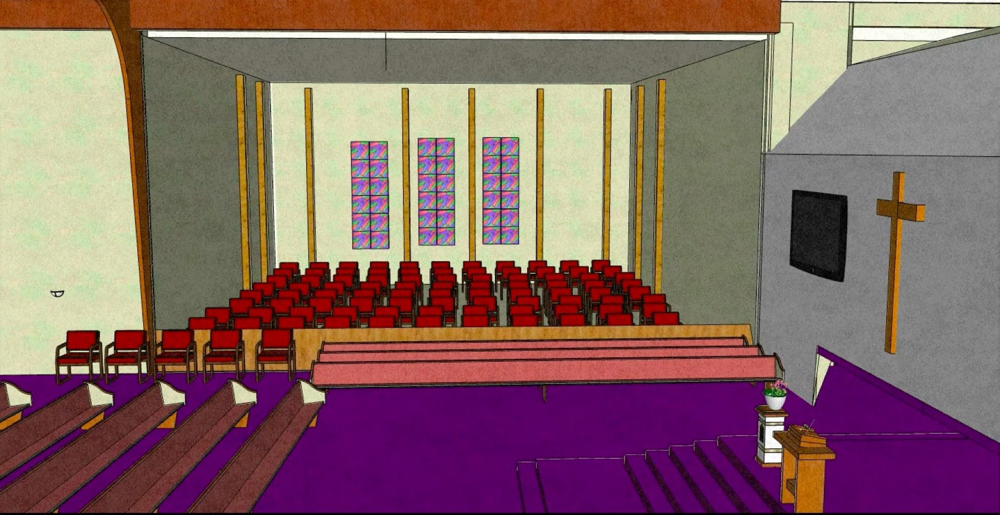
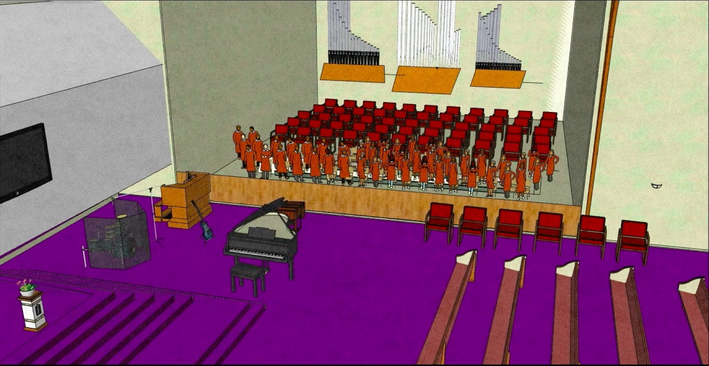
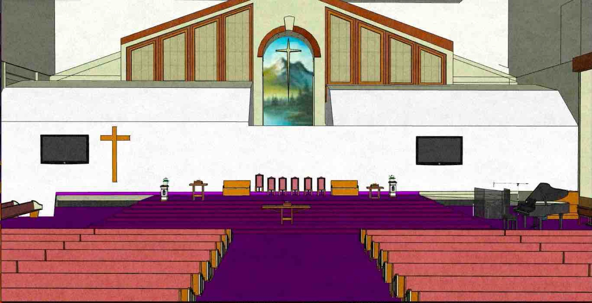
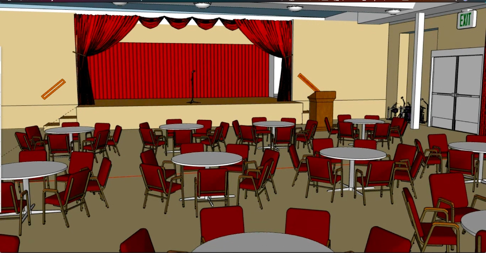
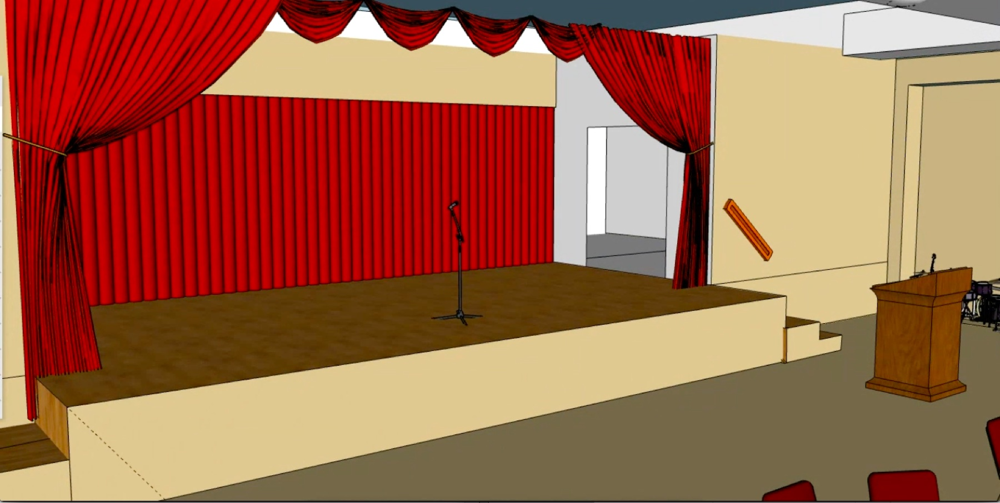
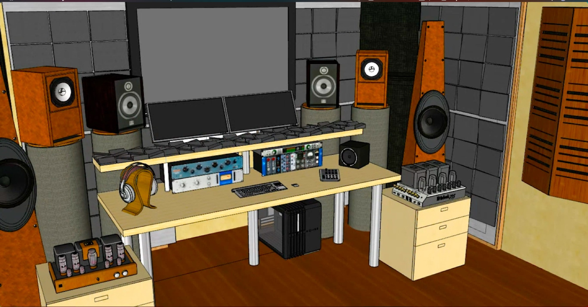
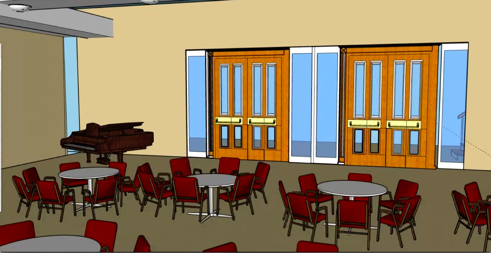
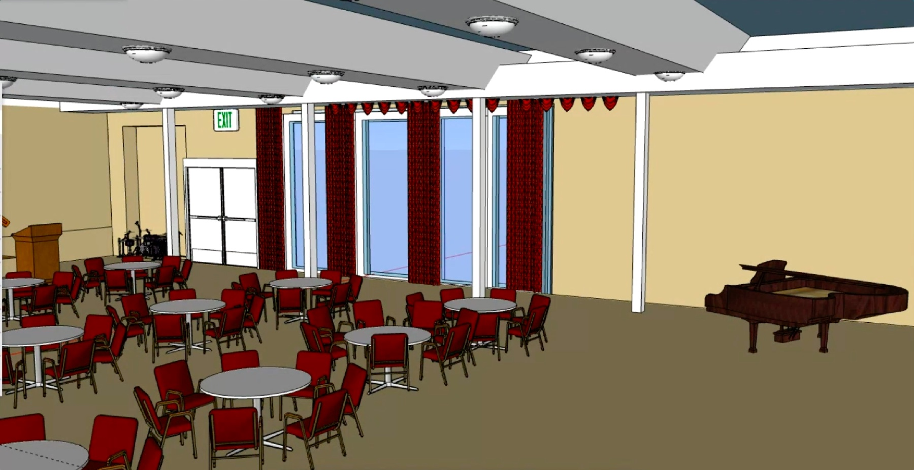
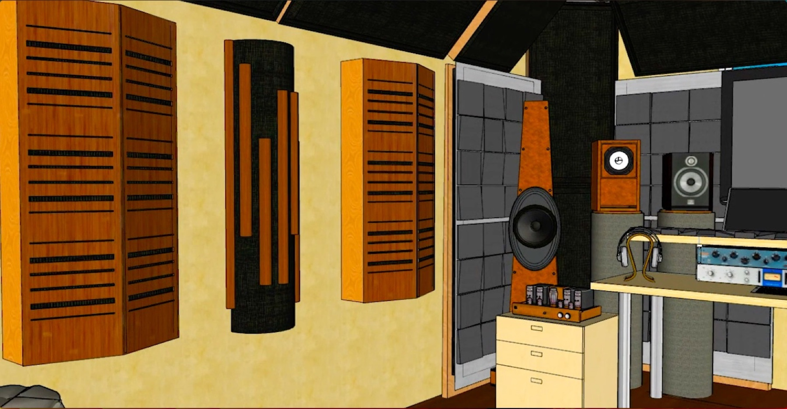
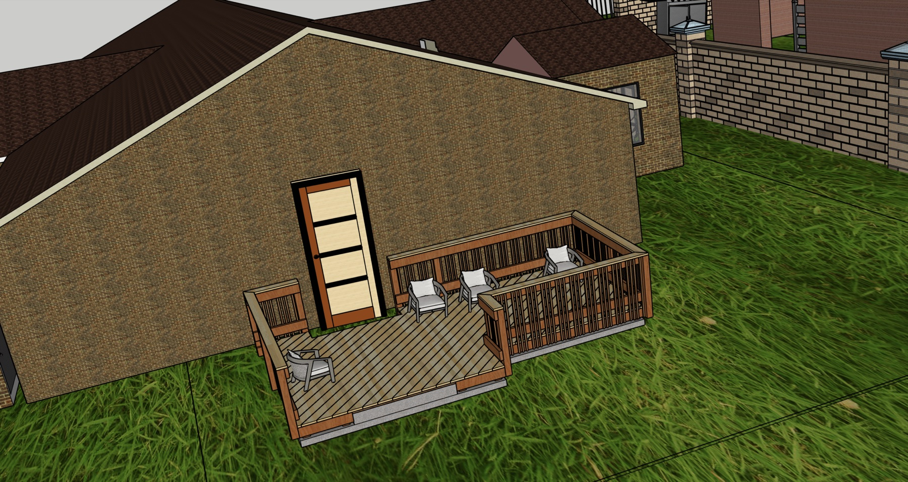
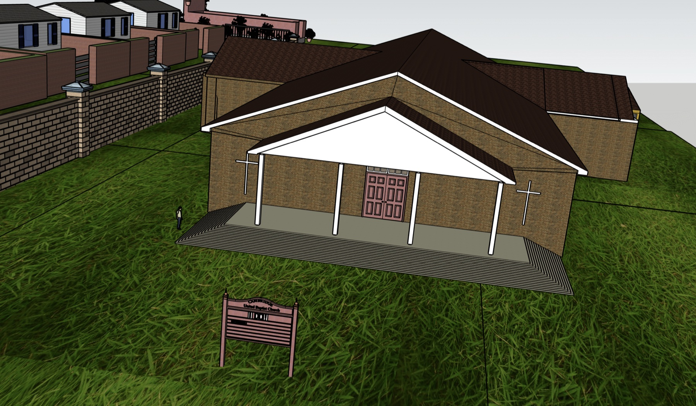
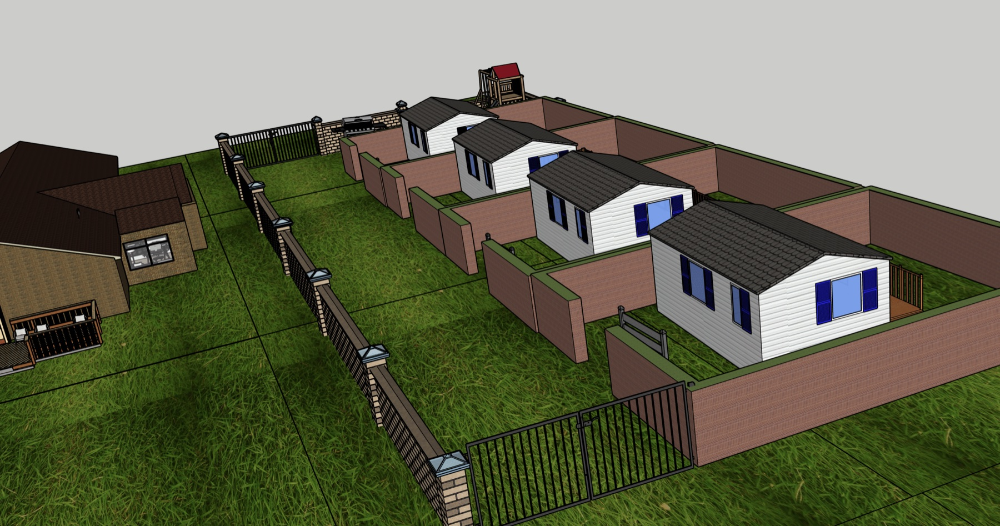
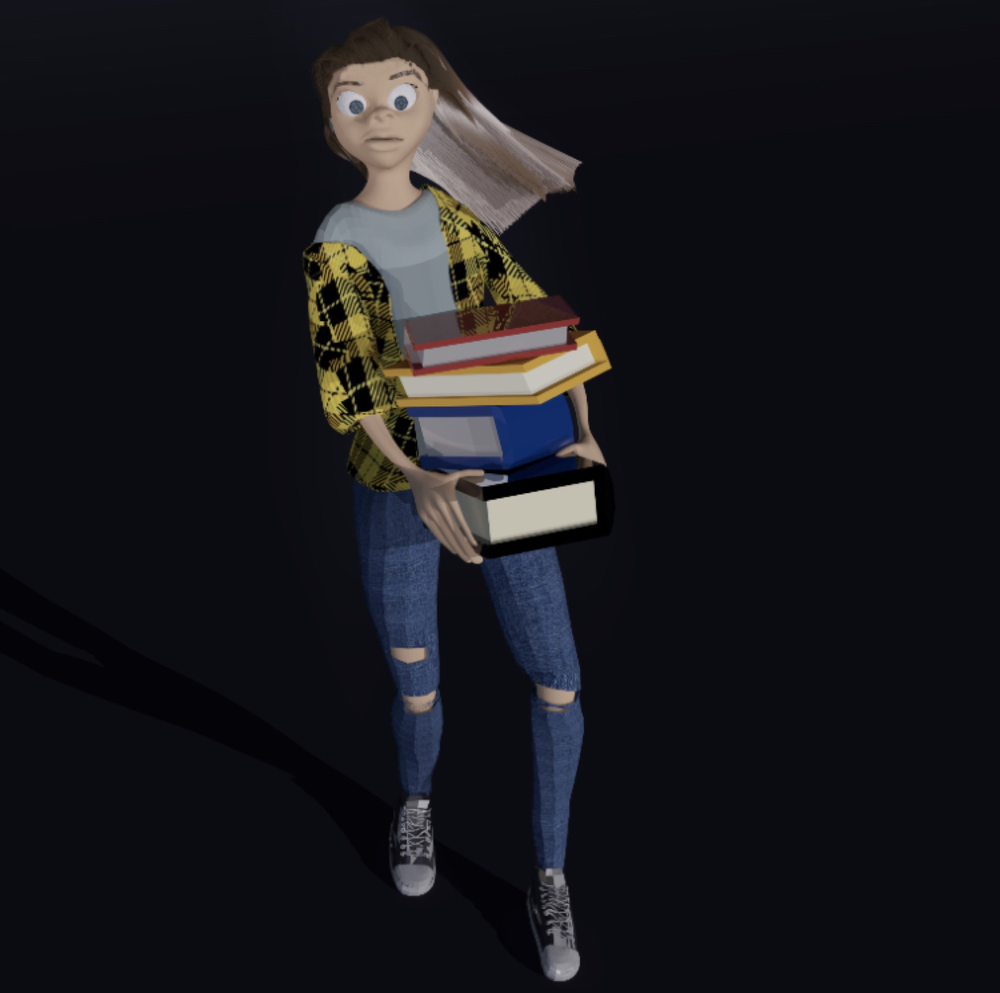
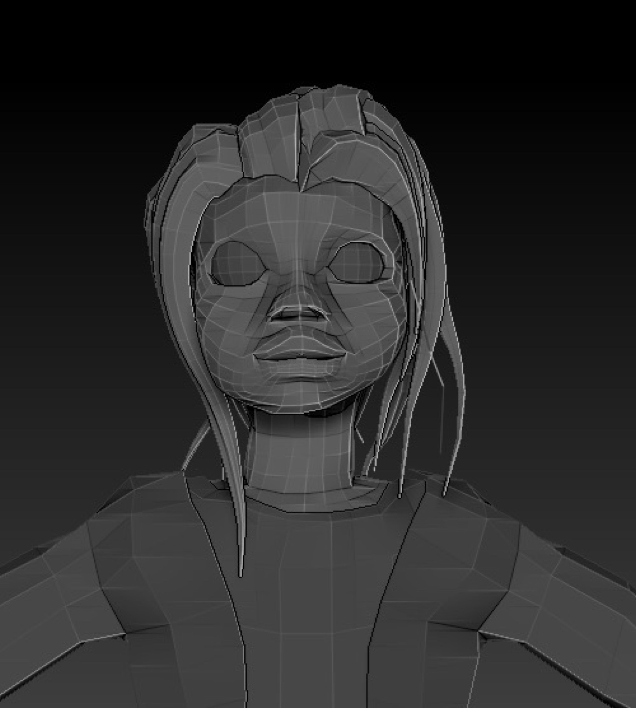
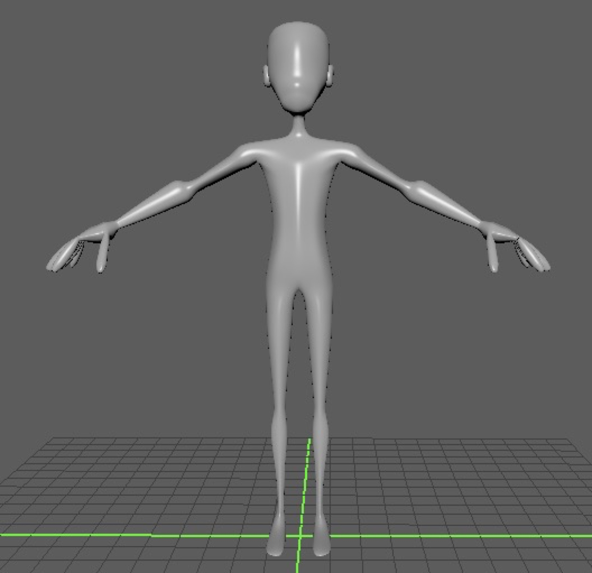